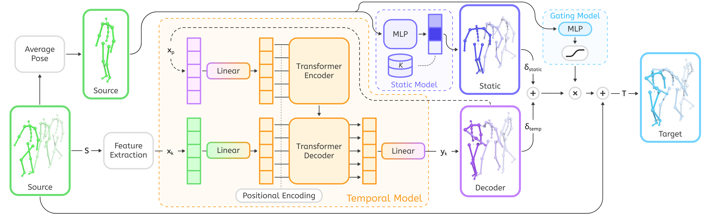

Abstract
Supporting a wide variety of motion styles is critical for creating diverse virtual characters, but current methods either require large stylized datasets or pre-trained models that cannot generalize beyond their training distribution.
We present STyMo, a few-shot approach that learns motion style from only seconds of paired data and trains in one to two minutes.
Our key insight is to decompose style into two components: a static component capturing time-invariant posture, and a temporal component capturing frame-wise dynamics. This decomposition yields an interpretable system where posture intensity, temporal exaggeration, and per-body-region style can be adjusted at runtime. Furthermore, the reduction in required training data and computation time structurally permits an iterative authoring workflow.
To ensure robustness on arbitrary inputs, we further introduce a stylizability gate that automatically prevents artifacts on out-of-distribution motions.
We demonstrate results across diverse motion styles, from subtle emotional variations to exaggerated character archetypes, and release our processed paired dataset to facilitate future research.
Video
Method Overview

Given a source motion, we extract source kinematics xk and average rotations. The static model (blue) classifies the average rotations to blend the K pre-computed style chunks (static deltas), capturing persistent postural offsets. The gating model predicts a frame-wise stylizability score (γ) to suppress stylization when the character performs out-of-distribution motions, preventing visual artifacts. The temporal model (orange) is a Transformer encoder-decoder: the encoder processes previous predictions xp, while the decoder takes xk and cross-attends to the encoder. The static and temporal outputs are combined, modulated by the gating score, and applied to the source motion to produce the final stylized pose.
Results & Evaluation
STyMo achieves highly robust results across diverse character styles and shapes. Below is the qualitative comparison showing the underlying skeleton deformation (neutral in green, stylized in blue) along with the corresponding skinned deformation on different character models (Neutral, Angry, Clown, Happy, Zombie).
BibTeX
@article{2026:ponton:stymo,
author = {Ponton, Jose Luis and Winkler, Alexander and Kavan, Ladislav and Ye, Yuting and Kadlecek, Petr},
title = {STyMo: Fast and Controllable Few-Shot Motion Style Transfer},
year = {2026},
publisher = {Association for Computing Machinery},
booktitle = {SIGGRAPH 2026},
address = {New York, NY, USA},
issn = {0730-0301},
doi = {10.1145/3811356},
journal = {ACM Trans. Graph.},
}